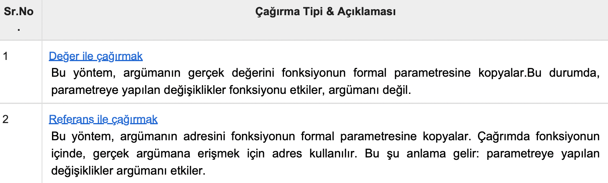

C Öğreticisi 10 (Fonksiyonlar)
Bu yazılar https://www.tutorialspoint.com/cprogramming/ adresindeki yazı dizilerinin çevirileridir.
Fonksiyon, birlikte bir görevi gerçekleştiren bir grup deyimdir. Her C programı, en az bir fonksiyona sahiptir: “ main() “. Ve önemsiz programların tümü ek fonksiyonları tanımlayabilir.
Kodunuzu ayrı fonksiyonlara bölebilirsiniz. Kodunuzu farklı fonksiyonlara nasıl böldüğünüz size bağlıdır, ama mantıksal olarak bölme işlemi her fonksiyonun belirli bir görevi yerine getireceği şeklindedir.
Bir fonksiyonun tanımlanması derleyiciye bir fonksiyonun ismi, dönüş tipi ve parametreleri hakkında bilgi verir. Bir fonksiyonu tanımı, fonksiyonun gerçek iskeletini sağlar.
C standart kütüphanesi, programınızın arayabileceği sayısız yerleşik fonksiyon sunar. Örneğin, iki karakter katarını(string) birleştirmek için strcat(), bir hafıza konumunu başka bir yere kopyalamak için memcpy() ve daha birçok fonksiyon…
Bir fonksiyon ayrıca bir yöntem veya alt metot olarak da ifade edilebilir.
Fonksiyon Argümanları
Fonksiyon argümanları kullanıyorsa, argümanların değerlerini bildiren değişkenler tanımlanmalıdır. Bu değişkenler fonksiyonun formal parametreleri olarak adlandırılır.
Formal parametreler fonksiyondaki diğer yerel değişkenler gibi davranır. Girişte yaratılır ve fonksiyonun çıkışında yok edilir.
Fonksiyon çağırırken, argümanlarla fonksiyon çağırmanın 2 yolu vardır -
Varsayılan olarak, C argümanları çağırırken değer ile çağırma yöntemini kullanır. Genel olarak, bu bir fonksiyon içindeki kodun, fonksiyonu çağırmak için kullanılan argümanları değiştiremeyeceği anlamına gelir.
https://www.tutorialspoint.com/cprogramming/c_functions.htm